AI & GAMEPLAY SYSTEMS
Coreline.
A mining game where natural-language instructions become robot actions. Built in Unity with a local Ollama language model.
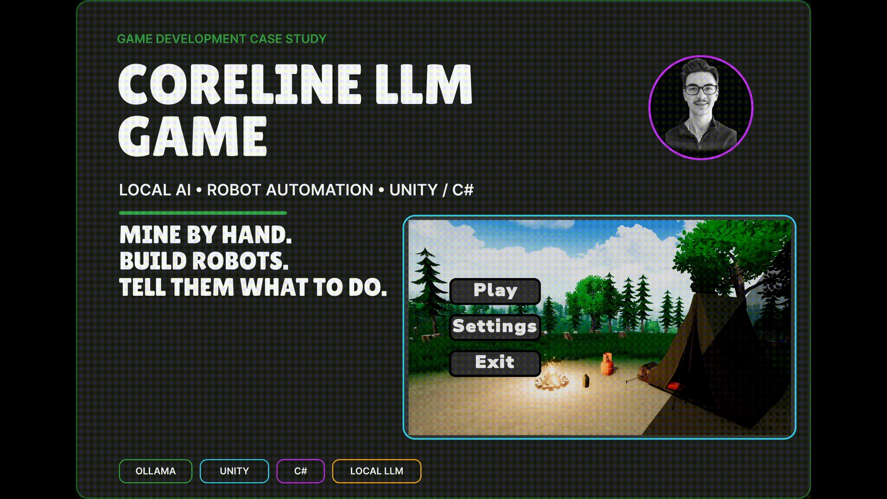
Cover
GAME DEVELOPMENT CASE STUDY CORELINE LLM GAME LOCAL AI • ROBOT AUTOMATION • UNITY / C# MINE BY HAND. BUILD ROBOTS. TELL THEM WHAT TO DO. OLLAMA UNITY C# LOCAL LLM
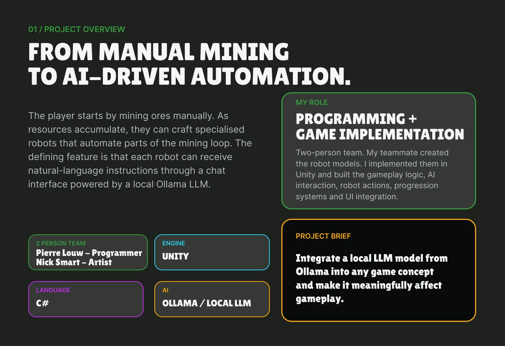
Project overview
01 / PROJECT OVERVIEW FROM MANUAL MINING TO AI-DRIVEN AUTOMATION. The player starts by mining ores manually. As resources accumulate, they can craft specialised robots that automate parts of the mining loop. The defining feature is that each robot can receive natural-language instructions through a chat interface powered by a local Ollama LLM. MY ROLE PROGRAMMING + GAME IMPLEMENTATION Two-person team. My teammate created the robot models. I implemented them in Unity and built the gameplay logic, AI interaction, robot actions, progression systems and UI integration. 2 PERSON TEAM Pierre Louw - Programmer Nick Smart - Artist ENGINE UNITY PROJECT BRIEF Integrate a local LLM model from Ollama into any game concept and make it meaningfully affect gameplay. LANGUAGE C# AI OLLAMA / LOCAL LLM
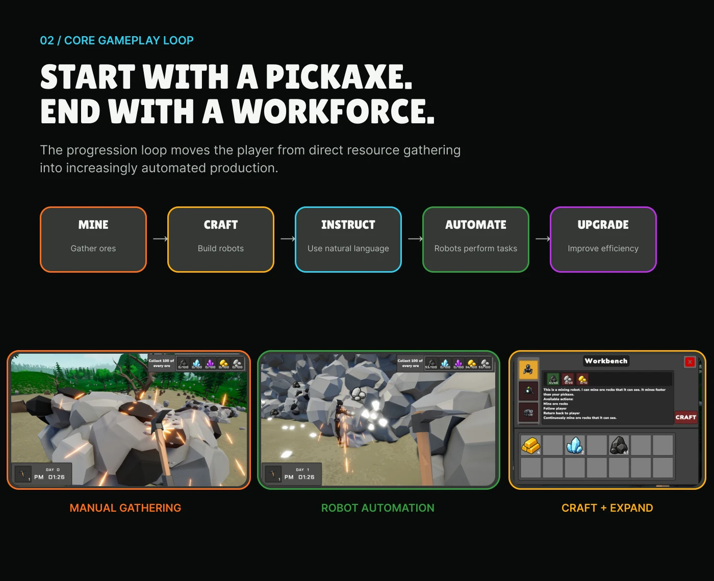
Core gameplay loop
02 / CORE GAMEPLAY LOOP START WITH A PICKAXE. END WITH A WORKFORCE. The progression loop moves the player from direct resource gathering into increasingly automated production. MINE Gather ores → CRAFT Build robots → INSTRUCT Use natural language → AUTOMATE Robots perform tasks → UPGRADE Improve efficiency MANUAL GATHERING ROBOT AUTOMATION CRAFT + EXPAND
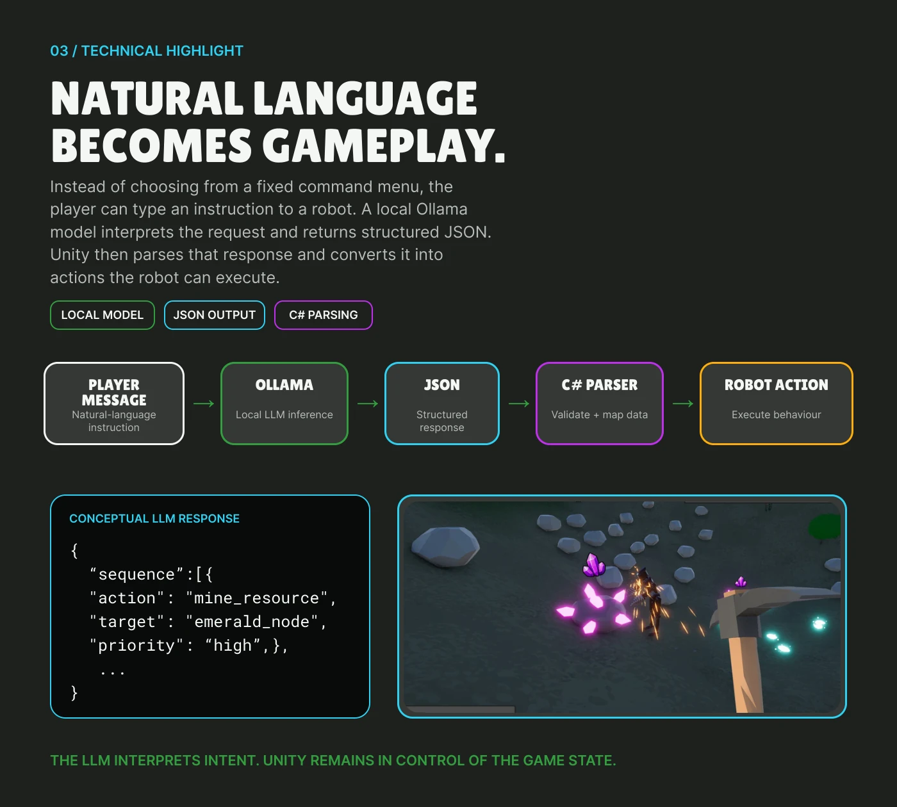
Natural language becomes gameplay
03 / TECHNICAL HIGHLIGHT NATURAL LANGUAGE BECOMES GAMEPLAY. Instead of choosing from a fixed command menu, the player can type an instruction to a robot. A local Ollama model interprets the request and returns structured JSON. Unity then parses that response and converts it into actions the robot can execute. LOCAL MODEL JSON OUTPUT C# PARSING PLAYER MESSAGE Natural-language instruction → OLLAMA Local LLM inference → JSON Structured response → C# PARSER Validate + map data → ROBOT ACTION Execute behaviour CONCEPTUAL LLM RESPONSE { “sequence”:[{ "action": "mine_resource", "target": "emerald_node", "priority": “high”,}, ... } THE LLM INTERPRETS INTENT. UNITY REMAINS IN CONTROL OF THE GAME STATE.
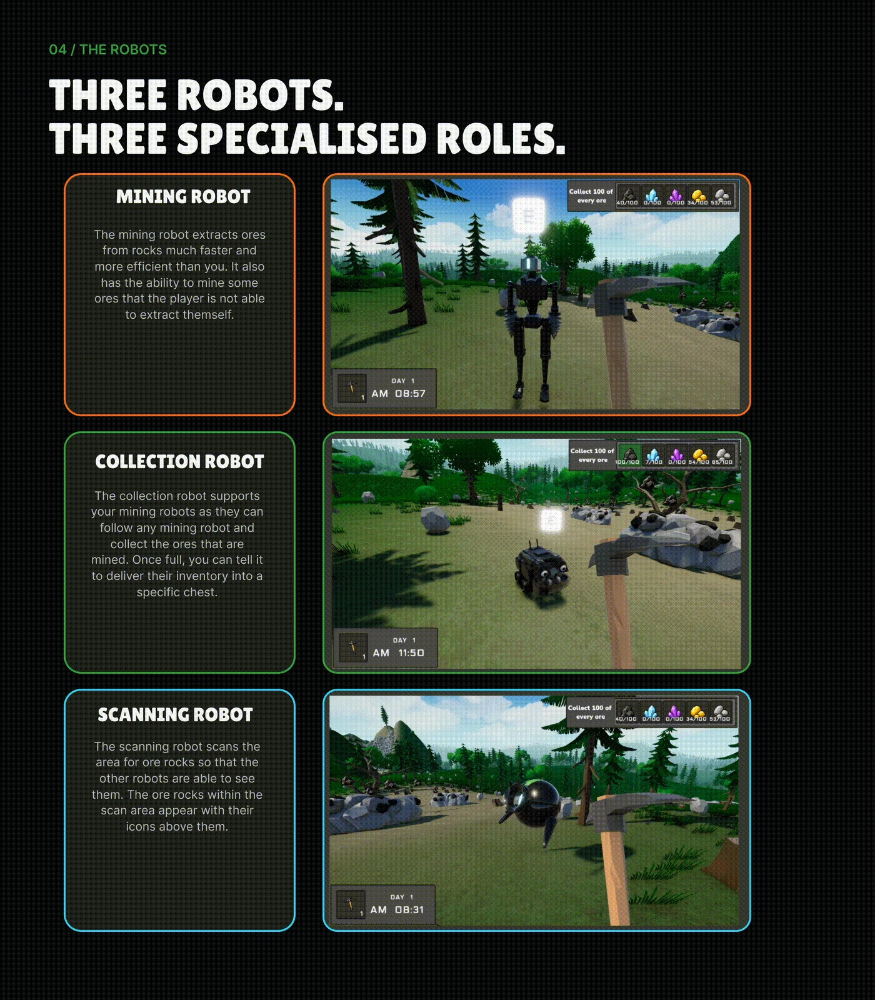
The robots
04 / THE ROBOTS THREE ROBOTS. THREE SPECIALISED ROLES. MINING ROBOT The mining robot extracts ores from rocks much faster and more efficient than you. It also has the ability to mine some ores that the player is not able to extract themself. COLLECTION ROBOT The collection robot supports your mining robots as they can follow any mining robot and collect the ores that are mined. Once full, you can tell it to deliver their inventory into a specific chest. SCANNING ROBOT The scanning robot scans the area for ore rocks so that the other robots are able to see them. The ore rocks within the scan area appear with their icons above them.
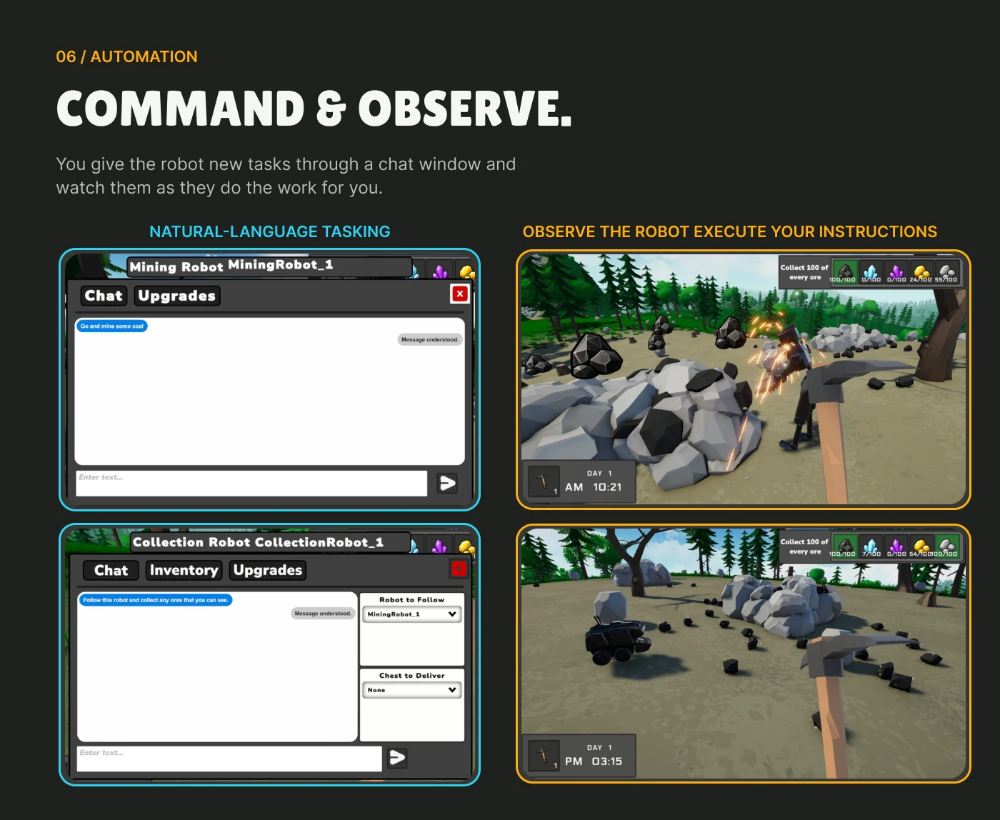
Command & observe
06 / AUTOMATION COMMAND & OBSERVE. You give the robot new tasks through a chat window and watch them as they do the work for you. NATURAL-LANGUAGE TASKING OBSERVE THE ROBOT EXECUTE YOUR INSTRUCTIONS
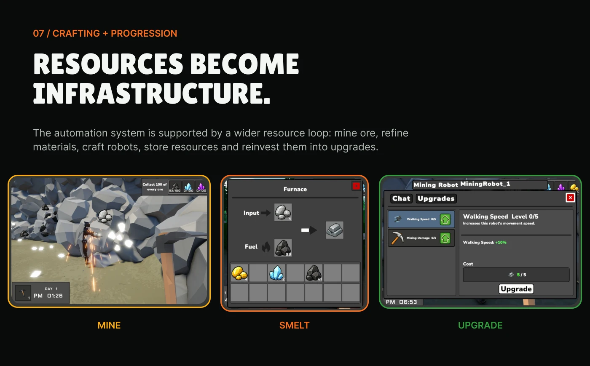
Crafting & progression
07 / CRAFTING + PROGRESSION RESOURCES BECOME INFRASTRUCTURE. The automation system is supported by a wider resource loop: mine ore, refine materials, craft robots, store resources and reinvest them into upgrades. MINE SMELT UPGRADE
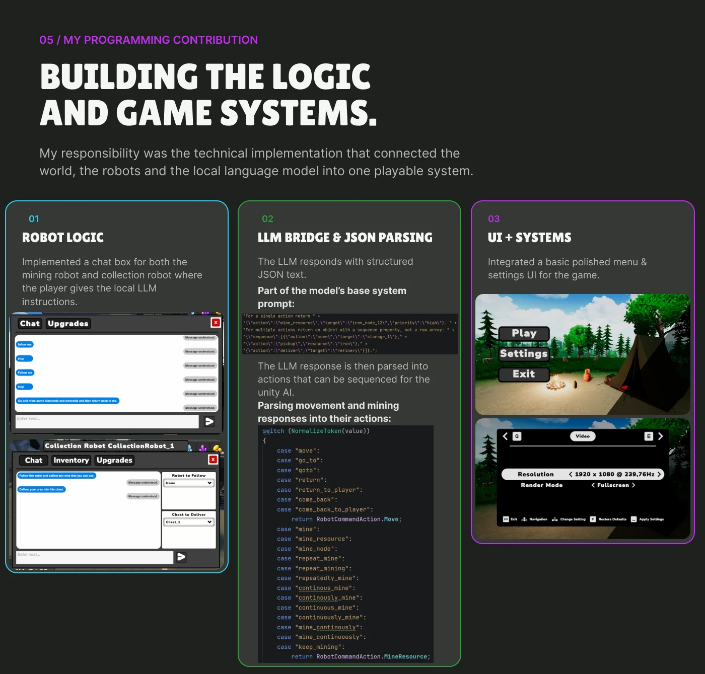
Programming contribution
05 / MY PROGRAMMING CONTRIBUTION BUILDING THE LOGIC AND GAME SYSTEMS. My responsibility was the technical implementation that connected the world, the robots and the local language model into one playable system. ROBOT LOGIC 01 LLM BRIDGE & JSON PARSING 02 03 UI + SYSTEMS Implemented a chat box for both the mining robot and collection robot where the player gives the local LLM instructions. The LLM responds with structured JSON text. Part of the model’s base system prompt: Integrated a basic polished menu & settings UI for the game. The LLM response is then parsed into actions that can be sequenced for the unity AI. Parsing movement and mining responses into their actions:
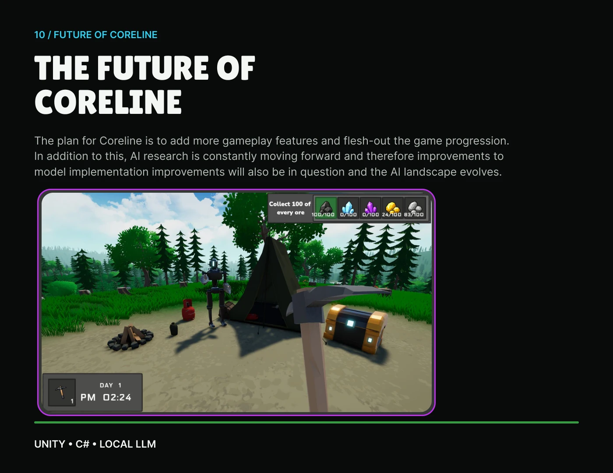
The future
10 / FUTURE OF CORELINE THE FUTURE OF CORELINE The plan for Coreline is to add more gameplay features and flesh-out the game progression. In addition to this, AI research is constantly moving forward and therefore improvements to model implementation improvements will also be in question and the AI landscape evolves. UNITY • C# • LOCAL LLM
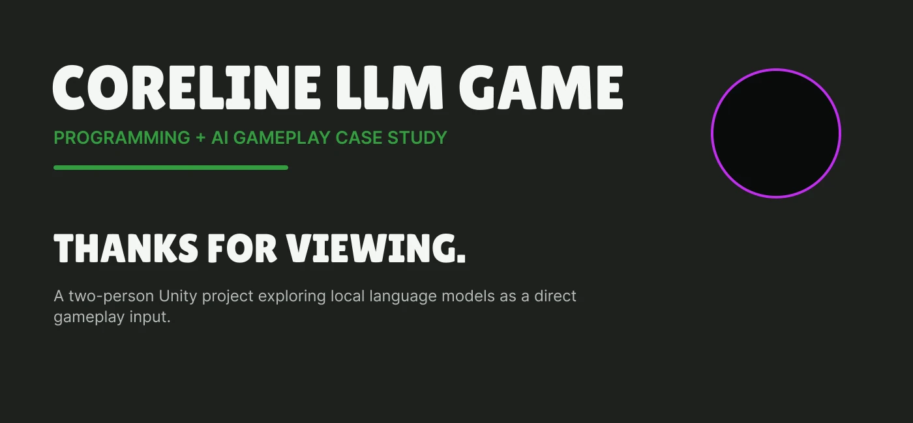
Thanks for viewing
CORELINE LLM GAME PROGRAMMING + AI GAMEPLAY CASE STUDY THANKS FOR VIEWING. A two-person Unity project exploring local language models as a direct gameplay input.
KEEP EXPLORING
Another world.
Another challenge.
Take a look behind the scenes of my next project.
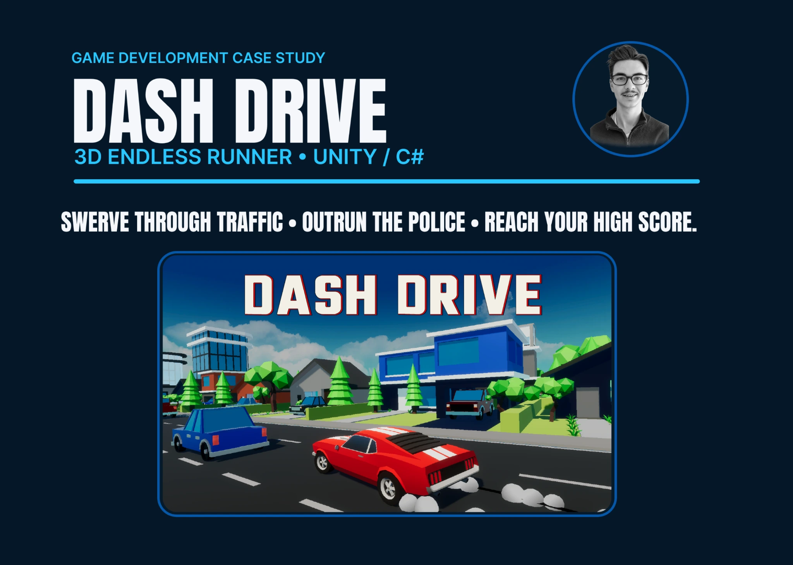
NEXT PROJECTDash Drive